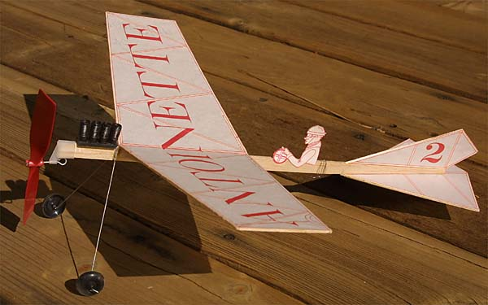

Duncan's Antoinette
|  |
 This model is a simple design styled to suggest the Antoinette, one of the most beautiful designs from the dawn of flight. It was originally designed by Bill Hannan, and is now kitted by ACKUS. Peck Polymers carries the kit in the United States, though it is not currently listed on their web site.
This model is a simple design styled to suggest the Antoinette, one of the most beautiful designs from the dawn of flight. It was originally designed by Bill Hannan, and is now kitted by ACKUS. Peck Polymers carries the kit in the United States, though it is not currently listed on their web site.
My nephew Duncan built this model over the course of a couple of days with just a bit of help. Like any 7 year old, he is easly distracted, and we took many breaks. The motor detail was created using drinking straws instead of the thread wrapped balsa as suggested on the plans. It flies wonderfully with the supplied propeller and rubber motor. For more information, contact Peck Polymers or Rune at info@ackus.com or www.ackus.com.
Copyright 2002, Thayer Syme.
|